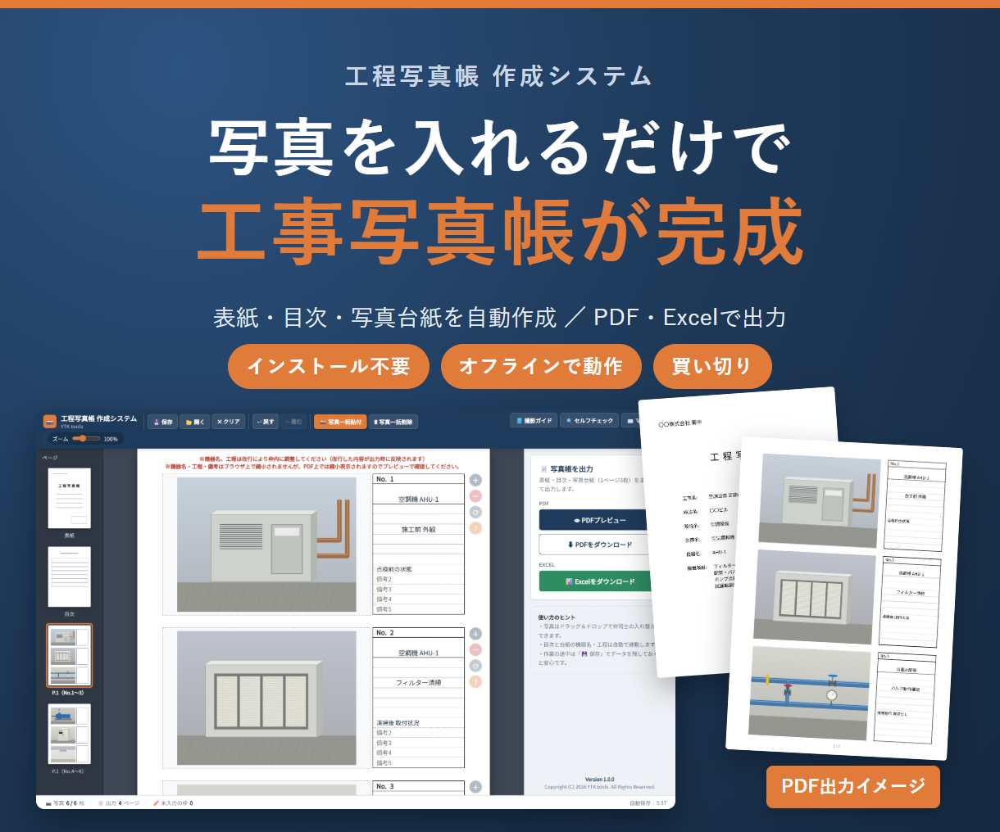
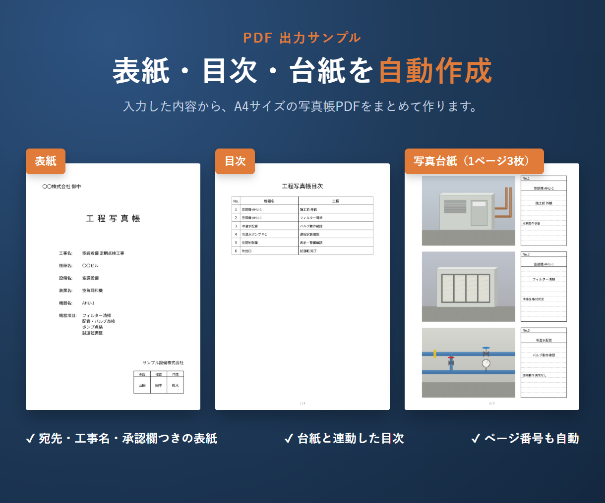
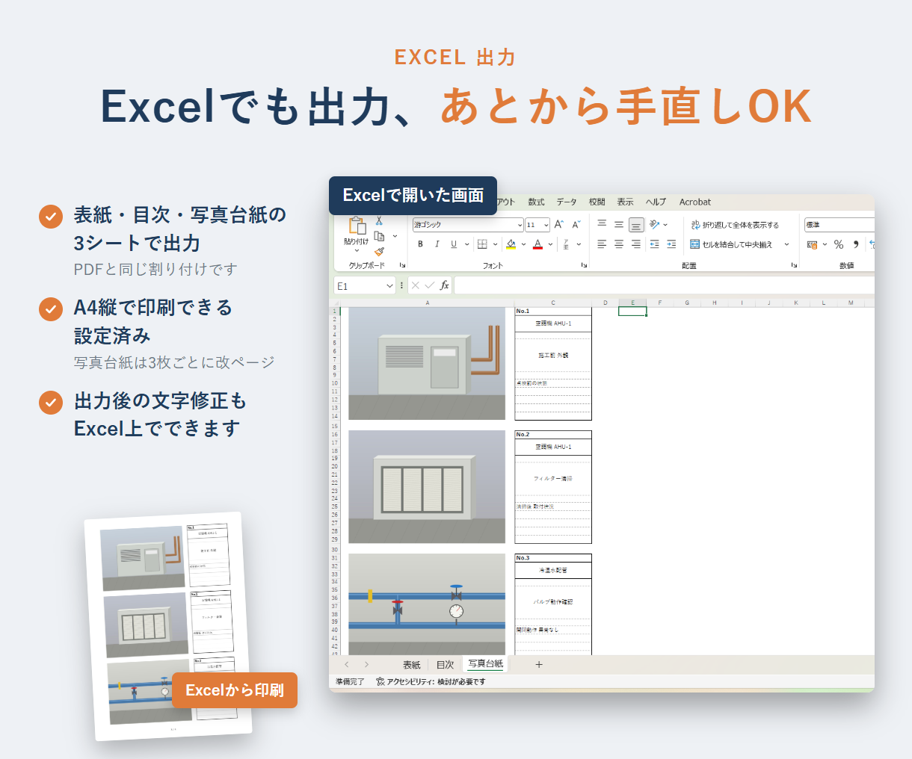

こんな方におすすめ
- 毎回Excelに写真を貼って、位置や大きさを合わせるのが面倒
- 工事写真台帳・工程写真帳の体裁が担当者ごとにバラバラ
- 高価な専用ソフトや月額のクラウドサービスまでは必要ない
- 写真を社外のサーバーに上げたくない
主な機能
- 表紙（宛先・工事名・会社名・承認／確認／作成の印鑑欄）、目次、写真台紙（1ページ3枚）を自動作成
- PDF出力／Excel出力（Excelは印刷設定済み。出力後の手直しも可能）
- ゴシック体／明朝体の切り替え
- 作業内容はブラウザに自動保存。保存データで別のPCにも引き継ぎ可能
- 撮影ガイド（工程別の撮影ポイント）と、セルフチェック（画質・未入力・重複の確認）



仕様・動作環境
| 形式 | HTMLファイル（ダブルクリックで開くだけ。インストール不要） |
|---|---|
| 動作環境 | Windows / Mac の Google Chrome または Microsoft Edge（最新版推奨）。Safari・スマートフォン・タブレットは非対応 |
| データ | 完全オフラインで動作し、写真やデータが外部に送信されることはありません |
| ご利用範囲 | ご購入1件につき、1つの会社・事業所内で何台のPCでも利用可 |
| 価格 | 3,000円（税込）・買い切り（月額費用なし） |
使い方や背景をまとめた記事：工程写真帳 作成システムの解説記事（note）